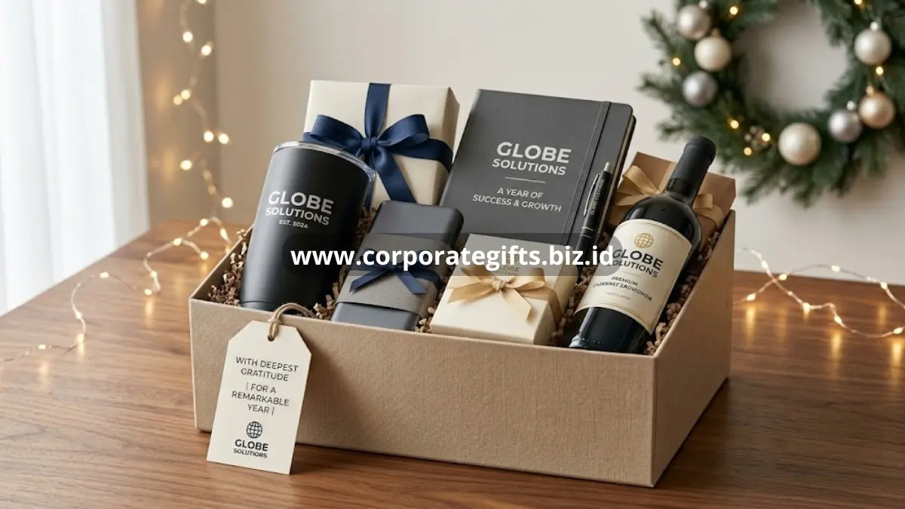

Poin Penting:
- Momen onboarding dan akhir tahun merupakan dua titik penting untuk menghadirkan corporate gifts for employees yang berkesan.
- Welcome kit onboarding umumnya berisi item esensial seperti lanyard, notebook, dan tumbler custom.
- Hadiah akhir tahun dapat dibedakan antara set eksekutif untuk manajemen dan parsel fungsional untuk seluruh tim.
- CorporateGifts menyediakan paket bundling yang dapat disesuaikan dengan kebutuhan dan budget setiap momen perusahaan.
Corporate gifts for employees pada momen onboarding dan akhir tahun membantu perusahaan menyampaikan apresiasi secara konkret sekaligus memperkuat kesan pertama dan kesan penutup tahun kerja karyawan.
Mengapa Momen Onboarding dan Akhir Tahun Penting untuk Corporate Gifts for Employees?
Momen onboarding dan akhir tahun menjadi titik penting karena keduanya membentuk kesan awal dan kesan penutup pengalaman kerja karyawan sepanjang tahun.
Kesan pertama pada hari pertama bekerja sering kali membentuk persepsi jangka panjang karyawan terhadap budaya perusahaan. Sebaliknya, momen akhir tahun menjadi ruang untuk merangkum pencapaian bersama sekaligus menyampaikan rasa terima kasih atas kontribusi selama satu tahun penuh.
Kedua momen ini menjadikan corporate gifts for employees lebih dari sekadar barang, melainkan simbol perhatian perusahaan terhadap perjalanan karyawan.
Apa Saja Ide Welcome Kit untuk Karyawan Baru Onboarding?
Welcome kit onboarding umumnya terdiri dari item esensial seperti lanyard, notebook, dan tumbler custom logo yang langsung dapat digunakan karyawan baru sejak hari pertama bekerja.
Paket Esensial: Lanyard, Notebook, dan Tumbler Custom
Kombinasi lanyard, notebook, dan tumbler custom logo menjadi pilihan dasar yang praktis karena langsung menunjang aktivitas kerja sehari-hari, mulai dari mencatat arahan tim hingga membawa akses kartu identitas.
Paket Premium: Tambahan Apparel dan Tech Gadget
Untuk kesan onboarding yang lebih berkesan, paket welcome kit dapat ditambahkan dengan apparel seperti polo shirt custom logo atau perangkat teknologi ringan seperti powerbank, sehingga karyawan baru merasa lebih diperhatikan sejak awal bergabung.

Apa Pilihan Hadiah Akhir Tahun dan Apresiasi Pencapaian Target?
Pilihan hadiah akhir tahun dapat dibedakan antara set eksekutif untuk manajemen dan top performer, serta parsel fungsional yang menjangkau seluruh anggota tim.
Set Eksekutif: Eksklusivitas untuk Manajemen dan Top Performer
Set eksekutif biasanya menghadirkan material yang lebih premium, seperti kulit asli atau produk dengan finishing khusus, sebagai bentuk apresiasi tambahan bagi jajaran manajemen maupun karyawan dengan pencapaian target yang menonjol.
Parsel Souvenir Fungsional untuk Seluruh Tim
Sementara itu, parsel fungsional dirancang agar dapat menjangkau seluruh karyawan secara merata, dengan tetap mempertahankan kualitas dan kesan profesional dari setiap item yang dipilih.
Wujudkan Paket Corporate Gifts for Employees Impian Bersama CorporateGifts
CorporateGifts membantu perusahaan menyusun paket corporate gifts for employees untuk momen onboarding maupun akhir tahun sesuai budget dan kebutuhan kustomisasi.
CorporateGifts memahami bahwa setiap momen perusahaan memiliki nuansa berbeda, sehingga tim akan membantu menyesuaikan kombinasi produk agar tetap relevan dengan tujuan acara.
Pesan Sekarang untuk Kebutuhan Acara Perusahaan Anda
Segera hubungi CorporateGifts untuk mendiskusikan kebutuhan corporate gifts for employees pada momen onboarding, apresiasi target, maupun perayaan akhir tahun perusahaan Anda. Tim CorporateGifts siap membantu mulai dari konsultasi konsep hingga proses produksi selesai tepat waktu.
- Momen onboarding dan akhir tahun adalah kesempatan strategis untuk memberikan corporate gifts for employees yang berkesan.
- Welcome kit sebaiknya mengutamakan item esensial yang fungsional sejak hari pertama kerja.
- Hadiah akhir tahun dapat dibedakan antara set eksekutif dan parsel tim sesuai kebutuhan apresiasi.
- CorporateGifts siap membantu menyusun paket sesuai momen dan budget perusahaan Anda.
FAQ
1. Mengapa momen onboarding dan akhir tahun penting untuk corporate gifts?
Momen onboarding dan akhir tahun adalah kesempatan strategis untuk memberikan corporate gifts for employees yang berkesan. Kesan pertama dan penutup sangat menentukan persepsi karyawan.
2. Apa isi welcome kit onboarding yang ideal?
Welcome kit sebaiknya mengutamakan item esensial yang fungsional sejak hari pertama kerja, seperti lanyard, notebook, dan tumbler.
3. Bagaimana membedakan hadiah akhir tahun untuk karyawan?
Hadiah akhir tahun dapat dibedakan antara set eksekutif untuk manajemen atau top performer, dan parsel fungsional untuk menjangkau seluruh tim secara merata.
4. Apa tambahan untuk welcome kit premium?
Untuk kesan lebih premium, welcome kit dapat ditambahkan apparel seperti polo shirt custom atau perangkat teknologi ringan seperti powerbank.
5. Apakah CorporateGifts dapat membantu menyusun paket ini?
Tentu saja, CorporateGifts siap membantu menyusun paket corporate gifts for employees sesuai dengan momen, kebutuhan kustomisasi, dan budget perusahaan Anda.
Butuh rekomendasi cepat untuk corporate gift?
Chat tim Pusat Souvenir & Merchandise Kantor untuk kurasi pilihan sesuai budget & kebutuhan brand Anda.